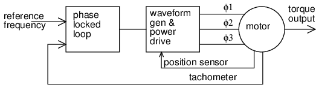
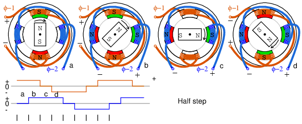
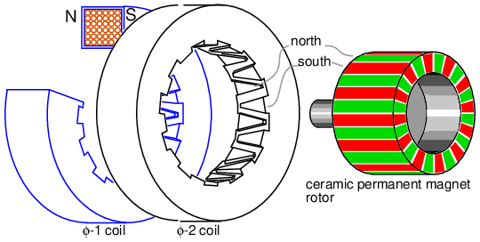
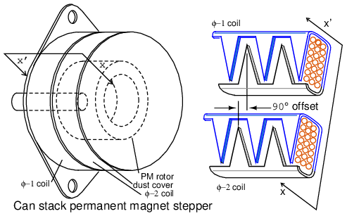
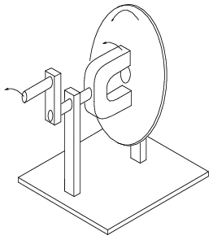
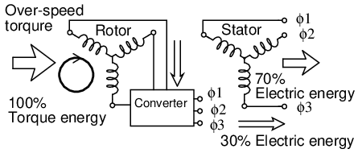
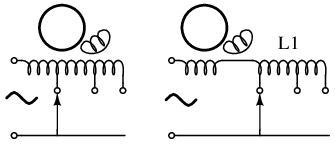

Original author: Dennis Crunkilton
Conductors of squirrel cage induction motor removed from rotor.
After the introduction of the DC electrical distribution system by Edison in the United States, a gradual transition to the more economical AC system commenced. Lighting worked as well on AC as on DC. Transmission of electrical energy covered longer distances at lower loss with alternating current. However, motors were a problem with alternating current. Initially, AC motors were constructed like DC motors. Numerous problems were encountered due to changing magnetic fields, as compared to the static fields in DC motor field coils.
AC electric motor family diagram.
Charles P. Steinmetz contributed to solving these problems with his investigation of hysteresis losses in iron armatures. Nikola Tesla envisioned an entirely new type of motor when he visualized a spinning turbine, not spun by water or steam, but by a rotating magnetic field. His new type of motor, the AC induction motor, is the workhorse of industry to this day. Its ruggedness and simplicity (Figure above) make for long life, high reliability, and low maintenance. Yet small brushed AC motors, similar to the DC variety, persist in small appliances along with small Tesla induction motors. Above one horsepower (750 W), the Tesla motor reigns supreme.
Modern solid state electronic circuits drive brushless DC motors with AC waveforms generated from a DC source. The brushless DC motor, actually an AC motor, is replacing the conventional brushed DC motor in many applications. And, the stepper motor, a digital version of motor, is driven by alternating current square waves, again, generated by solid state circuitry Figure above shows the family tree of the AC motors described in this chapter.
Cruise ships and other large vessels replace reduction geared drive shafts with large multi-megawatt generators and motors. Such has been the case with diesel-electric locomotives on a smaller scale for many years.
Motor system level diagram.
At the system level, (Figure above) a motor takes in electrical energy in terms of a potential difference and a current flow, converting it to mechanical work. Alas, electric motors are not 100% efficient. Some of the electric energy is lost to heat, another form of energy, due to I2R losses in the motor windings. The heat is an undesired byproduct of the conversion. It must be removed from the motor and may adversely affect longevity. Thus, one goal is to maximize motor efficiency, reducing the heat loss. AC motors also have some losses not encountered by DC motors: hysteresis and eddy currents.
Early designers of AC motors encountered problems traced to losses unique to alternating current magnetics. These problems were encountered when adapting DC motors to AC operation. Though few AC motors today bear any resemblance to DC motors, these problems had to be solved before AC motors of any type could be properly designed before they were built.
Both rotor and stator cores of AC motors are composed of a stack of insulated laminations. The laminations are coated with insulating varnish before stacking and bolting into the final form. Eddy currents are minimized by breaking the potential conductive loop into smaller less lossy segments. (Figure below) The current loops look like shorted transformer secondary turns. The thin isolated laminations break these loops. Also, the silicon (a semiconductor) added to the alloy used in the laminations increases electrical resistance which decreases the magnitude of eddy currents.
Eddy currents in iron cores.
If the laminations are made of silicon alloy grain oriented steel, hysteresis losses are minimized. Magnetic hysteresis is a lagging behind of magnetic field strength as compared to magnetizing force. If a soft iron nail is temporarily magnetized by a solenoid, one would expect the nail to lose the magnetic field once the solenoid is de-energized. However, a small amount of residual magnetization, Br due to hysteresis remains. (Figure below) An alternating current has to expend energy, -Hc the coercive force, in overcoming this residual magnetization before it can magnetize the core back to zero, let alone in the opposite direction. Hysteresis loss is encountered each time the polarity of the AC reverses. The loss is proportional to the area enclosed by the hysteresis loop on the B-H curve. “Soft” iron alloys have lower losses than “hard” high carbon steel alloys. Silicon grain oriented steel, 4% silicon, rolled to preferentially orient the grain or crystalline structure, has still lower losses.
Hysteresis curves for low and high loss alloys.
Once Steinmetz's Laws of hysteresis could predict iron core losses, it was possible to design AC motors which performed as designed. This was akin to being able to design a bridge ahead of time that would not collapse once it was actually built. This knowledge of eddy current and hysteresis was first applied to building AC commutator motors similar to their DC counterparts. Today this is but a minor category of AC motors. Others invented new types of AC motors bearing little resemblance to their DC kin.
Single phase synchronous motors are available in small sizes for applications requiring precise timing such as time keeping, (clocks) and tape players. Though battery powered quartz regulated clocks are widely available, the AC line operated variety has better long term accuracy-- over a period of months. This is due to power plant operators purposely maintaining the long term accuracy of the frequency of the AC distribution system. If it falls behind by a few cycles, they will make up the lost cycles of AC so that clocks lose no time.
Above 10 Horsepower (10 kW) the higher efficiency and leading powerfactor make large synchronous motors useful in industry. Large synchronous motors are a few percent more efficient than the more common induction motors. Though, the synchronous motor is more complex.
Since motors and generators are similar in construction, it should be possible to use a generator as a motor, conversely, use a motor as a generator. A synchronous motor is similar to an alternator with a rotating field. The figure below shows small alternators with a permanent magnet rotating field. This figure below could either be two paralleled and synchronized alternators driven by a mechanical energy source, or an alternator driving a synchronous motor. Or, it could be two motors, if an external power source were connected. The point is that in either case the rotors must run at the same nominal frequency, and be in phase with each other. That is, they must be synchronized. The procedure for synchronizing two alternators is to (1) open the switch, (2) drive both alternators at the same rotational rate, (3) advance or retard the phase of one unit until both AC outputs are in phase, (4) close the switch before they drift out of phase. Once synchronized, the alternators will be locked to each other, requiring considerable torque to break one unit loose (out of synchronization) from the other.

Synchronous motor running in step with alternator.
If more torque in the direction of rotation is applied to the rotor of one of the above rotating alternators, the angle of the rotor will advance (opposite of (3)) with respect to the magnetic field in the stator coils while still synchronized and the rotor will deliver energy to the AC line like an alternator. The rotor will also be advanced with respect to the rotor in the other alternator. If a load such as a brake is applied to one of the above units, the angle of the rotor will lag the stator field as at (3), extracting energy from the AC line, like a motor. If excessive torque or drag is applied, the rotor will exceed the maximum torque angle advancing or lagging so much that synchronization is lost. Torque is developed only when synchronization of the motor is maintained.
In the case of a small synchronous motor in place of the alternator Figure above right, it is not necessary to go through the elaborate synchronization procedure for alternators. However, the synchronous motor is not self starting and must still be brought up to the approximate alternator electrical speed before it will lock (synchronize) to the generator rotational rate. Once up to speed, the synchronous motor will maintain synchronism with the AC power source and develop torque.
Sinewave drives synchronous motor.
Assuming that the motor is up to synchronous speed, as the sine wave changes to positive in Figure above (1), the lower north coil pushes the north rotor pole, while the upper south coil attracts that rotor north pole. In a similar manner the rotor south pole is repelled by the upper south coil and attracted to the lower north coil. By the time that the sine wave reaches a peak at (2), the torque holding the north pole of the rotor up is at a maximum. This torque decreases as the sine wave decreases to 0 VDC at (3) with the torque at a minimum.
As the sine wave changes to negative between (3&4), the lower south coil pushes the south rotor pole, while attracting rotor north rotor pole. In a similar manner the rotor north pole is repelled by the upper north coil and attracted to the lower south coil. At (4) the sinewave reaches a negative peak with holding torque again at a maximum. As the sine wave changes from negative to 0 VDC to positive, The process repeats for a new cycle of sine wave.
Note, the above figure illustrates the rotor position for a no-load condition (α=0o). In actual practice, loading the rotor will cause the rotor to lag the positions shown by angle α. This angle increases with loading until the maximum motor torque is reached at α=90o electrical. Synchronization and torque are lost beyond this angle.
The current in the coils of a single phase synchronous motor pulsates while alternating polarity. If the permanent magnet rotor speed is close to the frequency of this alternation, it synchronizes to this alternation. Since the coil field pulsates and does not rotate, it is necessary to bring the permanent magnet rotor up to speed with an auxiliary motor. This is a small induction motor similar to those in the next section.
Addition of field poles decreases speed.
A 2-pole (pair of N-S poles) alternator will generate a 60 Hz sine wave when rotated at 3600 rpm (revolutions per minute). The 3600 rpm corresponds to 60 revolutions per second. A similar 2-pole permanent magnet synchronous motor will also rotate at 3600 rpm. A lower speed motor may be constructed by adding more pole pairs. A 4-pole motor would rotate at 1800 rpm, a 12-pole motor at 600 rpm. The style of construction shown (Figure above)) is for illustration. Higher efficiency higher torque multi-pole stator synchronous motors actually have multiple poles in the rotor.
One-winding 12-pole synchronous motor.
Rather than wind 12-coils for a 12-pole motor, wind a single coil with twelve interdigitated steel poles pieces as shown in Figure above. Though the polarity of the coil alternates due to the appplied AC, assume that the top is temporarily north, the bottom south. Pole pieces route the south flux from the bottom and outside of the coil to the top. These 6-souths are interleaved with 6-north tabs bent up from the top of the steel pole piece of the coil. Thus, a permanent magnet rotor bar will encounter 6-pole pairs corresponding to 6-cycles of AC in one physical rotation of the bar magnet. The rotation speed will be 1/6 of the electrical speed of the AC. Rotor speed will be 1/6 of that experienced with a 2-pole synchronous motor. Example: 60 Hz would rotate a 2-pole motor at 3600 rpm, or 600 rpm for a 12-pole motor.
Reprinted by permission of Westclox History at www.clockHistory.com
The stator (Figure above) shows a 12-pole Westclox synchronous clock motor. Construction is similar to the previous figure with a single coil. The one coil style of construction is economical for low torque motors. This 600 rpm motor drives reduction gears moving clock hands.
If the Westclox motor were to run at 600 rpm from a 50 Hz power source, how many poles would be required? A 10-pole motor would have 5-pairs of N-S poles. It would rotate at 50/5 = 10 rotations per second or 600 rpm (10 s-1 x 60 s/minute.)
Reprinted by permission of Westclox History at www.clockHistory.com
The rotor (Figure above) consists of a permanent magnet bar and a steel induction motor cup. The synchronous motor bar rotating within the pole tabs keeps accurate time. The induction motor cup outside of the bar magnet fits outside and over the tabs for self starting. At one time non-self-starting motors without the induction motor cup were manufactured.
A 3-phase synchronous motor as shown in Figure below generates an electrically rotating field in the stator. Such motors are not self starting if started from a fixed frequency power source such as 50 or 60 Hz as found in an industrial setting. Furthermore, the rotor is not a permanent magnet as shown below for the multi-horsepower (multi-kilowatt) motors used in industry, but an electromagnet. Large industrial synchronous motors are more efficient than induction motors. They are used when constant speed is required. Having a leading power factor, they can correct the AC line for a lagging power factor.
The three phases of stator excitation add vectorially to produce a single resultant magnetic field which rotates f/2n times per second, where f is the power line frequency, 50 or 60 Hz for industrial power line operated motors. The number of poles is n. For rotor speed in rpm, multiply by 60.
S = f120/n where: S = rotor speed in rpm f = AC line frequency n = number of poles per phase
The 3-phase 4-pole (per phase) synchronous motor (Figure below) will rotate at 1800 rpm with 60 Hz power or 1500 rpm with 50 Hz power. If the coils are energized one at a time in the sequence φ-1, φ-2, φ-3, the rotor should point to the corresponding poles in turn. Since the sine waves actually overlap, the resultant field will rotate, not in steps, but smoothly. For example, when the φ-1 and φ-2 sinewaves coincide, the field will be at a peak pointing between these poles. The bar magnet rotor shown is only appropriate for small motors. The rotor with multiple magnet poles (below right) is used in any efficient motor driving a substantial load. These will be slip ring fed electromagnets in large industrial motors. Large industrial synchronous motors are self started by embedded squirrel cage conductors in the armature, acting like an induction motor. The electromagnetic armature is only energized after the rotor is brought up to near synchronous speed.
Three phase, 4-pole synchronous motor
Small multi-phase synchronous motors (Figure above) may be started by ramping the drive frequency from zero to the final running frequency. The multi-phase drive signals are generated by electronic circuits, and will be square waves in all but the most demanding applications. Such motors are known as brushless DC motors. True synchronous motors are driven by sine waveforms. Two or three phase drive may be used by supplying the appropriate number of windings in the stator. Only 3-phase is shown above.
Electronic synchronous motor
The block diagram (Figure above) shows the drive electronics associated with a low voltage (12 VDC) synchronous motor. These motors have a position sensor integrated within the motor, which provides a low level signal with a frequency proportional to the speed of rotation of the motor. The position sensor could be as simple as solid state magnetic field sensors such as Hall effect devices providing commutation (armature current direction) timing to the drive electronics. The position sensor could be a high resolution angular sensor such as a resolver, an inductosyn (magnetic encoder), or an optical encoder.
If constant and accurate speed of rotation is required, (as for a disk drive) a tachometer and phase locked loop may be included. (Figure below) This tachometer signal, a pulse train proportional to motor speed, is fed back to a phase locked loop, which compares the tachometer frequency and phase to a stable reference frequency source such as a crystal oscillator.

Phase locked loop controls synchronous motor speed.
A motor driven by square waves of current, as provided by simple Hall effect sensors, is known as a brushless DC motor. This type of motor has higher ripple torque torque variation through a shaft revolution than a sine wave driven motor. This is not a problem for many applications. Though, we are primarily interested in synchronous motors in this section.
Motor ripple torque and mechanical analog.
Ripple torque, or cogging is caused by magnetic attraction of the rotor poles to the stator pole pieces. (Figure above) Note that there are no stator coils, not even a motor. The PM rotor may be rotated by hand but will encounter attraction to the pole pieces when near them. This is analogous to the mechanical situation. Would ripple torque be a problem for a motor used in a tape player? Yes, we do not want the motor to alternately speed and slow as it moves audio tape past a tape playback head. Would ripple torque be a problem for a fan motor? No.
Windings distributed in a belt produce a more sinusoidal field.
If a motor is driven by sinewaves of current synchronous with the motor back emf, it is classified as a synchronous AC motor, regardless of whether the drive waveforms are generated by electronic means. A synchronous motor will generate a sinusoidal back emf if the stator magnetic field has a sinusoidal distribution. It will be more sinusoidal if pole windings are distributed in a belt (Figure above) across many slots instead of concentrated on one large pole (as drawn in most of our simplified illustrations). This arrangement cancels many of the stator field odd harmonics. Slots having fewer windings at the edge of the phase winding may share the space with other phases. Winding belts may take on an alternate concentric form as shown in Figure below.
Concentric belts.
For a 2-phase motor, driven by a sinewave, the torque is constant throughout a revolution by the trigonometric identity:
sin2θ + cos2θ = 1
The generation and synchronization of the drive waveform requires a more precise rotor position indication than provided by the Hall effect sensors used in brushless DC motors. A resolver, or optical or magnetic encoder provides resolution of hundreds to thousands of parts (pulses) per revolution. A resolver provides analog angular position signals in the form of signals proportional to the sine and cosine of shaft angle. Encoders provide a digital angular position indication in either serial or parallel format. The sine wave drive may actually be from a PWM, Pulse Width Modulator, a high efficiency method of approximating a sinewave with a digital waveform. (Figure below) Each phase requires drive electronics for this wave form phase-shifted by the appropriate amount per phase.
PWM approximates a sinewave.
Synchronous motor efficiency is higher than that of induction motors. The synchronous motor can also be smaller, especially if high energy permanent magnets are used in the rotor. The advent of modern solid state electronics makes it possible to drive these motors at variable speed. Induction motors are mostly used in railway traction. However, a small synchronous motor, which mounts inside a drive wheel, makes it attractive for such applications. The high temperature superconducting version of this motor is one fifth to one third the weight of a copper wound motor.[1] The largest experimental superconducting synchronous motor is capable of driving a naval destroyer class ship. In all these applications the electronic variable speed drive is essential.
The variable speed drive must also reduce the drive voltage at low speed due to decreased inductive reactance at lower frequency. To develop maximum torque, the rotor needs to lag the stator field direction by 90o. Any more, it loses synchronization. Much less results in reduced torque. Thus, the position of the rotor needs to be known accurately. And the position of the rotor with respect to the stator field needs to be calculated, and controlled. This type of control is known as vector phase control. It is implemented with a fast microprocessor driving a pulse width modulator for the stator phases.
The stator of a synchronous motor is the same as that of the more popular induction motor. As a result the industrial grade electronic speed control used with induction motors is also applicable to large industrial synchronous motors.
If the rotor and stator of a conventional rotary synchronous motor are unrolled, a synchronous linear motor results. This type of motor is applied to precise high speed linear positioning.[2]
A larger version of the linear synchronous motor with a movable carriage containing high energy NdBFe permanent magnets is being developed to launch aircraft from naval aircraft carriers.[3]
Synchronous motors load the power line with a leading power factor. This is often useful in cancelling out the more commonly encountered lagging power factor caused by induction motors and other inductive loads. Originally, large industrial synchronous motors came into wide use because of this ability to correct the lagging power factor of induction motors.
This leading power factor can be exaggerated by removing the mechanical load and over exciting the field of the synchronous motor. Such a device is known as a synchronous condenser. Furthermore, the leading power factor can be adjusted by varying the field excitation. This makes it possible to nearly cancel an arbitrary lagging power factor to unity by paralleling the lagging load with a synchronous motor. A synchronous condenser is operated in a borderline condition between a motor and a generator with no mechanical load to fulfill this function. It can compensate either a leading or lagging power factor, by absorbing or supplying reactive power to the line. This enhances power line voltage regulation.
Since a synchronous condenser does not supply a torque, the output shaft may be dispensed with and the unit easily enclosed in a gas tight shell. The synchronous condenser may then be filled with hydrogen to aid cooling and reduce windage losses. Since the density of hydrogen is 7% of that of air, the windage loss for a hydrogen filled unit is 7% of that encountered in air. Furthermore, the thermal conductivity of hydrogen is ten times that of air. Thus, heat removal is ten times more efficient. As a result, a hydrogen filled synchronous condenser can be driven harder than an air cooled unit, or it may be physically smaller for a given capacity. There is no explosion hazard as long as the hydrogen concentration is maintained above 70%, typically above 91%.
The efficiency of long power transmission lines may be increased by placing synchronous condensers along the line to compensate lagging currents caused by line inductance. More real power may be transmitted through a fixed size line if the power factor is brought closer to unity by synchronous condensers absorbing reactive power.
The ability of synchronous condensers to absorb or produce reactive power on a transient basis stabilizes the power grid against short circuits and other transient fault conditions. Transient sags and dips of milliseconds duration are stabilized. This supplements longer response times of quick acting voltage regulation and excitation of generating equipment. The synchronous condenser aids voltage regulation by drawing leading current when the line voltage sags, which increases generator excitation thereby restoring line voltage. (Figure below) A capacitor bank does not have this ability.
Synchronous condenser improves power line voltage regulation.
The capacity of a synchronous condenser can be increased by replacing the copper wound iron field rotor with an ironless rotor of high temperature superconducting wire, which must be cooled to the liquid nitrogen boiling point of 77oK (-196oC). The superconducting wire carries 160 times the current of comparable copper wire, while producing a flux density of 3 Teslas or higher. An iron core would saturate at 2 Teslas in the rotor air gap. Thus, an iron core, approximate µr=1000, is of no more use than air, or any other material with a relative permeability µr=1, in the rotor. Such a machine is said to have considerable additional transient ability to supply reactive power to troublesome loads like metal melting arc furnaces. The manufacturer describes it as being a “reactive power shock absorber”. Such a synchronous condenser has a higher power density (smaller physically) than a switched capacitor bank. The ability to absorb or produce reactive power on a transient basis stabilizes the overall power grid against fault conditions.
The variable reluctance motor is based on the principle that an unrestrained piece of iron will move to complete a magnetic flux path with minimum reluctance, the magnetic analog of electrical resistance. (Figure below)
If the rotating field of a large synchronous motor with salient poles is de-energized, it will still develop 10 or 15% of synchronous torque. This is due to variable reluctance throughout a rotor revolution. There is no practical application for a large synchronous reluctance motor. However, it is practical in small sizes.
If slots are cut into the conductorless rotor of an induction motor, corresponding to the stator slots, a synchronous reluctance motor results. It starts like an induction motor but runs with a small amount of synchronous torque. The synchronous torque is due to changes in reluctance of the magnetic path from the stator through the rotor as the slots align. This motor is an inexpensive means of developing a moderate synchronous torque. Low power factor, low pull-out torque, and low efficiency are characteristics of the direct power line driven variable reluctance motor. Such was the status of the variable reluctance motor for a century before the development of semiconductor power control.
If an iron rotor with poles, but without any conductors, is fitted to a multi-phase stator, a switched reluctance motor, capable of synchronizing with the stator field results. When a stator coil pole pair is energized, the rotor will move to the lowest magnetic reluctance path. (Figure below) A switched reluctance motor is also known as a variable reluctance motor. The reluctance of the rotor to stator flux path varies with the position of the rotor.
Reluctance is a function of rotor position in a variable reluctance motor.
Sequential switching (Figure below) of the stator phases moves the rotor from one position to the next. The mangetic flux seeks the path of least reluctance, the magnetic analog of electric resistance. This is an over simplified rotor and waveforms to illustrate operation.
Variable reluctance motor, over-simplified operation.
If one end of each 3-phase winding of the switched reluctance motor is brought out via a common lead wire, we can explain operation as if it were a stepper motor. (Figure above) The other coil connections are successively pulled to ground, one at a time, in a wave drive pattern. This attracts the rotor to the clockwise rotating magnetic field in 60o increments.
Various waveforms may drive variable reluctance motors. (Figure below) Wave drive (a) is simple, requiring only a single ended unipolar switch. That is, one which only switches in one direction. More torque is provided by the bipolar drive (b), but requires a bipolar switch. The power driver must pull alternately high and low. Waveforms (a & b) are applicable to the stepper motor version of the variable reluctance motor. For smooth vibration free operation the 6-step approximation of a sine wave (c) is desirable and easy to generate. Sine wave drive (d) may be generated by a pulse width modulator (PWM), or drawn from the power line.
Variable reluctance motor drive waveforms: (a) unipolar wave drive, (b) bipolar full step (c) sinewave (d) bipolar 6-step.
Doubling the number of stator poles decreases the rotating speed and increases torque. This might eliminate a gear reduction drive. A variable reluctance motor intended to move in discrete steps, stop, and start is a variable reluctance stepper motor, covered in another section. If smooth rotation is the goal, there is an electronic driven version of the switched reluctance motor. Variable reluctance motors or steppers actually use rotors like those in Figure below.
Variable reluctance motors are poor performers when direct power line driven. However, microprocessors and solid state power drive makes this motor an economical high performance solution in some high volume applications.
Though difficult to control, this motor is easy to spin. Sequential switching of the field coils creates a rotating magnetic field which drags the irregularly shaped rotor around with it as it seeks out the lowest magnetic reluctance path. The relationship between torque and stator current is highly nonlinear– difficult to control.

Electronic driven variable reluctance motor.
An electronic driven variable reluctance motor (Figure below) resembles a brushless DC motor without a permanent magnet rotor. This makes the motor simple and inexpensive. However, this is offset by the cost of the electronic control, which is not nearly as simple as that for a brushless DC motor.
While the variable reluctance motor is simple, even more so than an induction motor, it is difficult to control. Electronic control solves this problem and makes it practical to drive the motor well above and below the power line frequency. A variable reluctance motor driven by a servo, an electronic feedback system, controls torque and speed, minimizing ripple torque. Figure below
Electronic driven variable reluctance motor.
This is the opposite of the high ripple torque desired in stepper motors. Rather than a stepper, a variable reluctance motor is optimized for continuous high speed rotation with minimum ripple torque. It is necessary to measure the rotor position with a rotary position sensor like an optical or magnetic encoder, or derive this from monitoring the stator back EMF. A microprocessor performs complex calculations for switching the windings at the proper time with solid state devices. This must be done precisely to minimize audible noise and ripple torque. For lowest ripple torque, winding current must be monitored and controlled. The strict drive requirements make this motor only practical for high volume applications like energy efficient vacuum cleaner motors, fan motors, or pump motors. One such vacuum cleaner uses a compact high efficiency electronic driven 100,000 rpm fan motor. The simplicity of the motor compensates for the drive electronics cost. No brushes, no commutator, no rotor windings, no permanent magnets, simplifies motor manufacture. The efficiency of this electronic driven motor can be high. But, it requires considerable optimization, using specialized design techniques, which is only justified for large manufacturing volumes.
A stepper motor is a “digital” version of the electric motor. The rotor moves in discrete steps as commanded, rather than rotating continuously like a conventional motor. When stopped but energized, a stepper (short for stepper motor) holds its load steady with a holding torque. Wide spread acceptance of the stepper motor within the last two decades was driven by the ascendancy of digital electronics. Modern solid state driver electronics was a key to its success. And, microprocessors readily interface to stepper motor driver circuits.
Application wise, the predecessor of the stepper motor was the servo motor. Today this is a higher cost solution to high performance motion control applications. The expense and complexity of a servomotor is due to the additional system components: position sensor and error amplifier. (Figure below) It is still the way to position heavy loads beyond the grasp of lower power steppers. High acceleration or unusually high accuracy still requires a servo motor. Otherwise, the default is the stepper due to low cost, simple drive electronics, good accuracy, good torque, moderate speed, and low cost.
Stepper motor vs servo motor.
A stepper motor positions the read-write heads in a floppy drive. They were once used for the same purpose in harddrives. However, the high speed and accuracy required of modern harddrive head positioning dictates the use of a linear servomotor (voice coil).
The servo amplifier is a linear amplifier with some difficult to integrate discrete components. A considerable design effort is required to optimize the servo amplifier gain vs phase response to the mechanical components. The stepper motor drivers are less complex solid state switches, being either “on” or “off”. Thus, a stepper motor controller is less complex and costly than a servo motor controller.
Slo-syn synchronous motors can run from AC line voltage like a single-phase permanent-capacitor induction motor. The capacitor generates a 90o second phase. With the direct line voltage, we have a 2-phase drive. Drive waveforms of bipolar (±) square waves of 2-24V are more common these days. The bipolar magnetic fields may also be generated from unipolar (one polarity) voltages applied to alternate ends of a center tapped winding. (Figure below) In other words, DC can be switched to the motor so that it sees AC. As the windings are energized in sequence, the rotor synchronizes with the consequent stator magnetic field. Thus, we treat stepper motors as a class of AC synchronous motor.
Unipolar drive of center tapped coil at (b), emulates AC current in single coil at (a).
Stepper motors are rugged and inexpensive because the rotor contains no winding slip rings, or commutator. The rotor is a cylindrical solid, which may also have either salient poles or fine teeth. More often than not the rotor is a permanent magnet. Determine that the rotor is a permanent magnet by unpowered hand rotation showing detent torque, torque pulsations. Stepper motor coils are wound within a laminated stator, except for can stack construction. There may be as few as two winding phases or as many as five. These phases are frequently split into pairs. Thus, a 4-pole stepper motor may have two phases composed of in-line pairs of poles spaced 90o apart. There may also be multiple pole pairs per phase. For example a 12-pole stepper has 6-pairs of poles, three pairs per phase.
Since stepper motors do not necessarily rotate continuously, there is no horsepower rating. If they do rotate continuously, they do not even approach a sub-fractional hp rated capability. They are truly small low power devices compared to other motors. They have torque ratings to a thousand in-oz (inch-ounces) or ten n-m (newton-meters) for a 4 kg size unit. A small “dime” size stepper has a torque of a hundredth of a newton-meter or a few inch-ounces. Most steppers are a few inches in diameter with a fraction of a n-m or a few in-oz torque. The torque available is a function of motor speed, load inertia, load torque, and drive electronics as illustrated on the speed vs torque curve. (Figure below) An energized, holding stepper has a relatively high holding torque rating. There is less torque available for a running motor, decreasing to zero at some high speed. This speed is frequently not attainable due to mechanical resonance of the motor load combination.
Stepper speed characteristics.
Stepper motors move one step at a time, the step angle, when the drive waveforms are changed. The step angle is related to motor construction details: number of coils, number of poles, number of teeth. It can be from 90o to 0.75o, corresponding to 4 to 500 steps per revolution. Drive electronics may halve the step angle by moving the rotor in half-steps.
Steppers cannot achieve the speeds on the speed torque curve instantaneously. The maximum start frequency is the highest rate at which a stopped and unloaded stepper can be started. Any load will make this parameter unattainable. In practice, the step rate is ramped up during starting from well below the maximum start frequency. When stopping a stepper motor, the step rate may be decreased before stopping.
The maximum torque at which a stepper can start and stop is the pull-in torque. This torque load on the stepper is due to frictional (brake) and inertial (flywheel) loads on the motor shaft. Once the motor is up to speed, pull-out torque is the maximum sustainable torque without losing steps.
There are three types of stepper motors in order of increasing complexity: variable reluctance, permanent magnet, and hybrid. The variable reluctance stepper has s solid soft steel rotor with salient poles. The permanent magnet stepper has a cylindrical permanent magnet rotor. The hybrid stepper has soft steel teeth added to the permanent magnet rotor for a smaller step angle.
A variable reluctance stepper motor relies upon magnetic flux seeking the lowest reluctance path through a magnetic circuit. This means that an irregularly shaped soft magnetic rotor will move to complete a magnetic circuit, minimizing the length of any high reluctance air gap. The stator typically has three windings distributed between pole pairs , the rotor four salient poles, yielding a 30o step angle.(Figure below) A de-energized stepper with no detent torque when hand rotated is identifiable as a variable reluctance type stepper.
Three phase and four phase variable reluctance stepper motors.
The drive waveforms for the 3-φ stepper can be seen in the “Reluctance motor” section. The drive for a 4-φ stepper is shown in Figure below. Sequentially switching the stator phases produces a rotating magnetic field which the rotor follows. However, due to the lesser number of rotor poles, the rotor moves less than the stator angle for each step. For a variable reluctance stepper motor, the step angle is given by:
ΘS = 360o/NS ΘR = 360o/NR ΘST = ΘR - ΘS where: ΘS = stator angle, ΘR = Rotor angle, ΘST = step angle NS = number stator poles, NP = number rotor poles
Stepping sequence for variable reluctance stepper.
In Figure above, moving from φ1 to φ2, etc., the stator magnetic field rotates clockwise. The rotor moves counterclockwise (CCW). Note what does not happen! The dotted rotor tooth does not move to the next stator tooth. Instead, the φ2 stator field attracts a different tooth in moving the rotor CCW, which is a smaller angle (15o) than the stator angle of 30o. The rotor tooth angle of 45o enters into the calculation by the above equation. The rotor moved CCW to the next rotor tooth at 45o, but it aligns with a CW by 30o stator tooth. Thus, the actual step angle is the difference between a stator angle of 45o and a rotor angle of 30o . How far would the stepper rotate if the rotor and stator had the same number of teeth? Zero– no rotation.
Starting at rest with phase φ1 energized, three pulses are required (φ2, φ3, φ4) to align the “dotted” rotor tooth to the next CCW stator tooth, which is 45o. With 3-pulses per stator tooth, and 8-stator teeth, 24-pulses or steps move the rotor through 360o.
By reversing the sequence of pulses, the direction of rotation is reversed above right. The direction, step rate, and number of steps are controlled by a stepper motor controller feeding a driver or amplifier. This could be combined into a single circuit board. The controller could be a microprocessor or a specialized integrated circuit. The driver is not a linear amplifier, but a simple on-off switch capable of high enough current to energize the stepper. In principle, the driver could be a relay or even a toggle switch for each phase. In practice, the driver is either discrete transistor switches or an integrated circuit. Both driver and controller may be combined into a single integrated circuit accepting a direction command and step pulse. It outputs current to the proper phases in sequence.
Variable reluctance stepper motor.
Disassemble a reluctance stepper to view the internal components. Otherwise, we show the internal construction of a variable reluctance stepper motor in Figure above. The rotor has protruding poles so that they may be attracted to the rotating stator field as it is switched. An actual motor, is much longer than our simplified illustration.
Variable reluctance stepper drives lead screw.
The shaft is frequently fitted with a drive screw. (Figure above) This may move the heads of a floppy drive upon command by the floppy drive controller.
Variable reluctance stepper motors are applied when only a moderate level of torque is required and a coarse step angle is adequate. A screw drive, as used in a floppy disk drive is such an application. When the controller powers-up, it does not know the position of the carriage. However, it can drive the carriage toward the optical interrupter, calibrating the position at which the knife edge cuts the interrupter as “home”. The controller counts step pulses from this position. As long as the load torque does not exceed the motor torque, the controller will know the carriage position.
A permanent magnet stepper motor has a cylindrical permanent magnet rotor. The stator usually has two windings. The windings could be center tapped to allow for a unipolar driver circuit where the polarity of the magnetic field is changed by switching a voltage from one end to the other of the winding. A bipolar drive of alternating polarity is required to power windings without the center tap. A pure permanent magnet stepper usually has a large step angle. Rotation of the shaft of a de-energized motor exhibits detent torque. If the detent angle is large, say 7.5o to 90o, it is likely a permanent magnet stepper rather than a hybrid stepper (next subsection).
Permanent magnet stepper motors require phased alternating currents applied to the two (or more) windings. In practice, this is almost always square waves generated from DC by solid state electronics. Bipolar drive is square waves alternating between (+) and (-) polarities, say, +2.5 V to -2.5 V. Unipolar drive supplies a (+) and (-) alternating magnetic flux to the coils developed from a pair of positive square waves applied to opposite ends of a center tapped coil. The timing of the bipolar or unipolar wave is wave drive, full step, or half step.
PM wave drive sequence (a) φ1+ , (b) φ2+ , (c) φ1- , (d) φ2-.
Conceptually, the simplest drive is wave drive. (Figure above) The rotation sequence left to right is positive φ-1 points rotor north pole up, (+) φ-2 points rotor north right, negative φ-1 attracts rotor north down, (-) φ-2 points rotor left. The wave drive waveforms below show that only one coil is energized at a time. While simple, this does not produce as much torque as other drive techniques.
Waveforms: bipolar wave drive.
The waveforms (Figure above) are bipolar because both polarities , (+) and (-) drive the stepper. The coil magnetic field reverses because the polarity of the drive current reverses.
Waveforms: unipolar wave drive.
The (Figure above) waveforms are unipolar because only one polarity is required. This simplifies the drive electronics, but requires twice as many drivers. There are twice as many waveforms because a pair of (+) waves is required to produce an alternating magnetic field by application to opposite ends of a center tapped coil. The motor requires alternating magnetic fields. These may be produced by either unipolar or bipolar waves. However, motor coils must have center taps for unipolar drive.
Permanent magnet stepper motors are manufactured with various lead-wire configurations. (Figure below)
Stepper motor wiring diagrams.
The 4-wire motor can only be driven by bipolar waveforms. The 6-wire motor, the most common arrangement, is intended for unipolar drive because of the center taps. Though, it may be driven by bipolar waves if the center taps are ignored. The 5-wire motor can only be driven by unipolar waves, as the common center tap interferes if both windings are energized simultaneously. The 8-wire configuration is rare, but provides maximum flexibility. It may be wired for unipolar drive as for the 6-wire or 5-wire motor. A pair of coils may be connected in series for high voltage bipolar low current drive, or in parallel for low voltage high current drive.
A bifilar winding is produced by winding the coils with two wires in parallel, often a red and green enamelled wire. This method produces exact 1:1 turns ratios for center tapped windings. This winding method is applicable to all but the 4-wire arrangement above.
Full step drive provides more torque than wave drive because both coils are energized at the same time. This attracts the rotor poles midway between the two field poles. (Figure below)
Full step, bipolar drive.
Full step bipolar drive as shown in Figure above has the same step angle as wave drive. Unipolar drive (not shown) would require a pair of unipolar waveforms for each of the above bipolar waveforms applied to the ends of a center tapped winding. Unipolar drive uses a less complex, less expensive driver circuit. The additional cost of bipolar drive is justified when more torque is required.
The step angle for a given stepper motor geometry is cut in half with half step drive. This corresponds to twice as many step pulses per revolution. (Figure below) Half stepping provides greater resolution in positioning of the motor shaft. For example, half stepping the motor moving the print head across the paper of an inkjet printer would double the dot density.

Half step, bipolar drive.
Half step drive is a combination of wave drive and full step drive with one winding energized, followed by both windings energized, yielding twice as many steps. The unipolar waveforms for half step drive are shown above. The rotor aligns with the field poles as for wave drive and between the poles as for full step drive.
Microstepping is possible with specialized controllers. By varying the currents to the windings sinusoidally many microsteps can be interpolated between the normal positions.
The contruction of a permanent magnet stepper motor is considerably different from the drawings above. It is desirable to increase the number of poles beyond that illustrated to produce a smaller step angle. It is also desirable to reduce the number of windings, or at least not increase the number of windings for ease of manufacture.

Permanent magnet stepper motor, 24-pole can-stack construction.
The permanent magnet stepper (Figure above) only has two windings, yet has 24-poles in each of two phases. This style of construction is known as can stack. A phase winding is wrapped with a mild steel shell, with fingers brought to the center. One phase, on a transient basis, will have a north side and a south side. Each side wraps around to the center of the doughnut with twelve interdigitated fingers for a total of 24 poles. These alternating north-south fingers will attract the permanent magnet rotor. If the polarity of the phase were reversed, the rotor would jump 360o/24 = 15o. We do not know which direction, which is not useful. However, if we energize φ-1 followed by φ-2, the rotor will move 7.5o because the φ-2 is offset (rotated) by 7.5o from φ-1. See below for offset. And, it will rotate in a reproducible direction if the phases are alternated. Application of any of the above waveforms will rotate the permanent magnet rotor.
Note that the rotor is a gray ferrite ceramic cylinder magnetized in the 24-pole pattern shown. This can be viewed with magnet viewer film or iron filings applied to a paper wrapping. Though, the colors will be green for both north and south poles with the film.

(a) External view of can stack, (b) field offset detail.
Can-stack style construction of a PM stepper is distinctive and easy to identify by the stacked “cans”. (Figure above) Note the rotational offset between the two phase sections. This is key to making the rotor follow the switching of the fields between the two phases.
The hybrid stepper motor combines features of both the variable reluctance stepper and the permanent magnet stepper to produce a smaller step angle. The rotor is a cylindrical permanent magnet, magnetized along the axis with radial soft iron teeth (Figure below). The stator coils are wound on alternating poles with corresponding teeth. There are typically two winding phases distributed between pole pairs. This winding may be center tapped for unipolar drive. The center tap is achieved by a bifilar winding, a pair of wires wound physically in parallel, but wired in series. The north-south poles of a phase swap polarity when the phase drive current is reversed. Bipolar drive is required for un-tapped windings.

Hybrid stepper motor.
Note that the 48-teeth on one rotor section are offset by half a pitch from the other. See rotor pole detail above. This rotor tooth offset is also shown below. Due to this offset, the rotor effectively has 96 interleaved poles of opposite polarity. This offset allows for rotation in 1/96 th of a revolution steps by reversing the field polarity of one phase. Two phase windings are common as shown above and below. Though, there could be as many as five phases.
The stator teeth on the 8-poles correspond to the 48-rotor teeth, except for missing teeth in the space between the poles. Thus, one pole of the rotor, say the south pole, may align with the stator in 48 distinct positions. However, the teeth of the south pole are offset from the north teeth by half a tooth. Therefore, the rotor may align with the stator in 96 distinct positions. This half tooth offset shows in the rotor pole detail above, or Figure below.
As if this were not complicated enough, the stator main poles are divided into two phases (φ-1, φ-2). These stator phases are offset from one another by one-quarter of a tooth. This detail is only discernable on the schematic diagrams below. The result is that the rotor moves in steps of a quarter of a tooth when the phases are alternately energized. In other words, the rotor moves in 2×96=192 steps per revolution for the above stepper.
The above drawing is representative of an actual hybrid stepper motor. However, we provide a simplified pictorial and schematic representation (Figure below) to illustrate details not obvious above. Note the reduced number of coils and teeth in rotor and stator for simplicity. In the next two figures, we attempt to illustrate the quarter tooth rotation produced by the two stator phases offset by a quarter tooth, and the rotor half tooth offset. The quarter tooth stator offset in conjunction with drive current timing also defines direction of rotation.
Hybrid stepper motor schematic diagram.
Features of hybrid stepper schematic (Figure above)
Hybrid stepper motor rotation sequence.
Hybrid stepper motor rotation (Figure above)An un-powered stepper motor with detent torque is either a permanent magnet stepper or a hybrid stepper. The hybrid stepper will have a small step angle, much less than the 7.5o of permanent magnet steppers. The step angle could be a fraction of a degree, corresponding to a few hundred steps per revolution.
Brushless DC motors were developed from conventional brushed DC motors with the availability of solid state power semiconductors. So, why do we discuss brushless DC motors in a chapter on AC motors? Brushless DC motors are similar to AC synchronous motors. The major difference is that synchronous motors develop a sinusoidal back EMF, as compared to a rectangular, or trapezoidal, back EMF for brushless DC motors. Both have stator created rotating magnetic fields producing torque in a magnetic rotor.
Synchronous motors are usually large multi-kilowatt size, often with electromagnet rotors. True synchronous motors are considered to be single speed, a submultiple of the powerline frequency. Brushless DC motors tend to be small– a few watts to tens of watts, with permanent magnet rotors. The speed of a brushless DC motor is not fixed unless driven by a phased locked loop slaved to a reference frequency. The style of construction is either cylindrical or pancake. (Figures and below)
Cylindrical construction: (a) outside rotor, (b) inside rotor.
The most usual construction, cylindrical, can take on two forms (Figure above). The most common cylindrical style is with the rotor on the inside, above right. This style motor is used in hard disk drives. It is also possible to put the rotor on the outside surrounding the stator. Such is the case with brushless DC fan motors, sans the shaft. This style of construction may be short and fat. However, the direction of the magnetic flux is radial with respect to the rotational axis.
Pancake motor construction: (a) single stator, (b) double stator.
High torque pancake motors may have stator coils on both sides of the rotor (Figure above-b). Lower torque applications like floppy disk drive motors suffice with a stator coil on one side of the rotor, (Figure above-a). The direction of the magnetic flux is axial, that is, parallel to the axis of rotation.
The commutation function may be performed by various shaft position sensors: optical encoder, magnetic encoder (resolver, synchro, etc), or Hall effect magnetic sensors. Small inexpensive motors use Hall effect sensors. (Figure below) A Hall effect sensor is a semiconductor device where the electron flow is affected by a magnetic field perpendicular to the direction of current flow.. It looks like a four terminal variable resistor network. The voltages at the two outputs are complementary. Application of a magnetic field to the sensor causes a small voltage change at the output. The Hall output may drive a comparator to provide for more stable drive to the power device. Or, it may drive a compound transistor stage if properly biased. More modern Hall effect sensors may contain an integrated amplifier, and digital circuitry. This 3-lead device may directly drive the power transistor feeding a phase winding. The sensor must be mounted close to the permanent magnet rotor to sense its position.
Hall effect sensors commutate 3-φ brushless DC motor.
The simple cylindrical 3-φ motor Figure above is commutated by a Hall effect device for each of the three stator phases. The changing position of the permanent magnet rotor is sensed by the Hall device as the polarity of the passing rotor pole changes. This Hall signal is amplified so that the stator coils are driven with the proper current. Not shown here, the Hall signals may be processed by combinatorial logic for more efficient drive waveforms.
The above cylindrical motor could drive a harddrive if it were equipped with a phased locked loop (PLL) to maintain constant speed. Similar circuitry could drive the pancake floppy disk drive motor (Figure below). Again, it would need a PLL to maintain constant speed.

Brushless pancake motor
The 3-φ pancake motor (Figure above) has 6-stator poles and 8-rotor poles. The rotor is a flat ferrite ring magnetized with eight axially magnetized alternating poles. We do not show that the rotor is capped by a mild steel plate for mounting to the bearing in the middle of the stator. The steel plate also helps complete the magnetic circuit. The stator poles are also mounted atop a steel plate, helping to close the magnetic circuit. The flat stator coils are trapezoidal to more closely fit the coils, and approximate the rotor poles. The 6-stator coils comprise three winding phases.
If the three stator phases were successively energized, a rotating magnetic field would be generated. The permanent magnet rotor would follow as in the case of a synchronous motor. A two pole rotor would follow this field at the same rotation rate as the rotating field. However, our 8-pole rotor will rotate at a submultiple of this rate due the the extra poles in the rotor.
The brushless DC fan motor (Figure below) has these feature:
Brushless fan motor, 2-φ.
The goal of a brushless fan motor is to minimize the cost of manufacture. This is an incentive to move lower performance products from a 3-φ to a 2-φ configuration. Depending on how it is driven, it may be called a 4-φ motor.
You may recall that conventional DC motors cannot have an even number of armature poles (2,4, etc) if they are to be self-starting, 3,5,7 being common. Thus, it is possible for a hypothetical 4-pole motor to come to rest at a torque minima, where it cannot be started from rest. The addition of the four small salient poles with no windings superimposes a ripple torque upon the torque vs position curve. When this ripple torque is added to normal energized-torque curve, the result is that torque minima are partially removed. This makes it possible to start the motor for all possible stopping positions. The addition of eight permanant magnet poles to the normal 4-pole permanent magnet rotor superimposes a small second harmonic ripple torque upon the normal 4-pole ripple torque. This further removes the torque minima. As long as the torque minima does not drop to zero, we should be able to start the motor. The more successful we are in removing the torque minima, the easier the motor starting.
The 2-φ stator requires that the Hall sensors be spaced apart by 90o electrical. If the rotor was a 2-pole rotor, the Hall sensors would be placed 90o physical. Since we have a 4-pole permanent magnet rotor, the sensors must be placed 45o physical to achieve the 90o electrical spacing. Note Hall spacing above. The majority of the torque is due to the interaction of the inside stator 2-φ coils with the 4-pole section of the rotor. Moreover, the 4-pole section of the rotor must be on the bottom so that the Hall sensors will sense the proper commutation signals. The 8-poles rotor section is only for improving motor starting.
Brushless DC motor 2-φ push-pull drive.
In Figure above, the 2-φ push-pull drive (also known as 4-φ drive) uses two Hall effect sensors to drive four windings. The sensors are spaced 90o electrical apart, which is 90o physical for a single pole rotor. Since the Hall sensor has two complementary outputs, one sensor provides commutation for two opposing windings.
Most AC motors are induction motors. Induction motors are favored due to their ruggedness and simplicity. In fact, 90% of industrial motors are induction motors.
Nikola Tesla conceived the basic principals of the polyphase induction motor in 1883, and had a half horsepower (400 watt) model by 1888. Tesla sold the manufacturing rights to George Westinghouse for $65,000.
Most large ( > 1 hp or 1 kW) industrial motors are poly-phase induction motors. By poly-phase, we mean that the stator contains multiple distinct windings per motor pole, driven by corresponding time shifted sine waves. In practice, this is two or three phases. Large industrial motors are 3-phase. While we include numerous illustrations of two-phase motors for simplicity, we must emphasize that nearly all poly-phase motors are three-phase. By induction motor, we mean that the stator windings induce a current flow in the rotor conductors, like a transformer, unlike a brushed DC commutator motor.
An induction motor is composed of a rotor, known as an armature, and a stator containing windings connected to a poly-phase energy source as shown in Figure below. The simple 2-phase induction motor below is similar to the 1/2 horsepower motor which Nikola Tesla introduced in 1888.
Tesla polyphase induction motor.
The stator in Figure above is wound with pairs of coils corresponding to the phases of electrical energy available. The 2-phase induction motor stator above has 2-pairs of coils, one pair for each of the two phases of AC. The individual coils of a pair are connected in series and correspond to the opposite poles of an electromagnet. That is, one coil corresponds to a N-pole, the other to a S-pole until the phase of AC changes polarity. The other pair of coils is oriented 90o in space to the first pair. This pair of coils is connected to AC shifted in time by 90o in the case of a 2-phase motor. In Tesla's time, the source of the two phases of AC was a 2-phase alternator.
The stator in Figure above has salient, obvious protruding poles, as used on Tesla's early induction motor. This design is used to this day for sub-fractional horsepower motors (<50 watts). However, for larger motors less torque pulsation and higher efficiency results if the coils are embedded into slots cut into the stator laminations. (Figure below)
Stator frame showing slots for windings.
The stator laminations are thin insulated rings with slots punched from sheets of electrical grade steel. A stack of these is secured by end screws, which may also hold the end housings.
Stator with (a) 2-φ and (b) 3-φ windings.
In Figure above, the windings for both a two-phase motor and a three-phase motor have been installed in the stator slots. The coils are wound on an external fixture, then worked into the slots. Insulation wedged between the coil periphery and the slot protects against abrasion.
Actual stator windings are more complex than the single windings per pole in Figure above. Comparing the 2-φ motor to Tesla's 2-φ motor with salient poles, the number of coils is the same. In actual large motors, a pole winding, is divided into identical coils inserted into many smaller slots than above. This group is called a phase belt. See Figure below. The distributed coils of the phase belt cancel some of the odd harmonics, producing a more sinusoidal magnetic field distribution across the pole. This is shown in the synchronous motor section. The slots at the edge of the pole may have fewer turns than the other slots. Edge slots may contain windings from two phases. That is, the phase belts overlap.
The key to the popularity of the AC induction motor is simplicity as evidenced by the simple rotor (Figure below). The rotor consists of a shaft, a steel laminated rotor, and an embedded copper or aluminum squirrel cage, shown at (b) removed from the rotor. As compared to a DC motor armature, there is no commutator. This eliminates the brushes, arcing, sparking, graphite dust, brush adjustment and replacement, and re-machining of the commutator.
Laminated rotor with (a) embedded squirrel cage, (b) conductive cage removed from rotor.
The squirrel cage conductors may be skewed, twisted, with respsect to the shaft. The misalignment with the stator slots reduces torque pulsations.
Both rotor and stator cores are composed of a stack of insulated laminations. The laminations are coated with insulating oxide or varnish to minimize eddy current losses. The alloy used in the laminations is selected for low hysteresis losses.
A short explanation of operation is that the stator creates a rotating magnetic field which drags the rotor around.
The theory of operation of induction motors is based on a rotating magnetic field. One means of creating a rotating magnetic field is to rotate a permanent magnet as shown in Figure below. If the moving magnetic lines of flux cut a conductive disk, it will follow the motion of the magnet. The lines of flux cutting the conductor will induce a voltage, and consequent current flow, in the conductive disk. This current flow creates an electromagnet whose polarity opposes the motion of the permanent magnet– Lenz's Law. The polarity of the electromagnet is such that it pulls against the permanent magnet. The disk follows with a little less speed than the permanent magnet.

Rotating magnetic field produces torque in conductive disk.
The torque developed by the disk is proportional to the number of flux lines cutting the disk and the rate at which it cuts the disk. If the disk were to spin at the same rate as the permanent magnet, there would be no flux cutting the disk, no induced current flow, no electromagnet field, no torque. Thus, the disk speed will always fall behind that of the rotating permanent magnet, so that lines of flux cut the disk induce a current, create an electromagnetic field in the disk, which follows the permanent magnet. If a load is applied to the disk, slowing it, more torque will be developed as more lines of flux cut the disk. Torque is proportional to slip, the degree to which the disk falls behind the rotating magnet. More slip corresponds to more flux cutting the conductive disk, developing more torque.
An analog automotive eddy current speedometer is based on the principle illustrated above. With the disk restrained by a spring, disk and needle deflection is proportional to magnet rotation rate.
A rotating magnetic field is created by two coils placed at right angles to each other, driven by currents which are 90o out of phase. This should not be surprising if you are familiar with oscilloscope Lissajous patterns.
Out of phase (90o) sine waves produce circular Lissajous pattern.
In Figure above, a circular Lissajous is produced by driving the horizontal and vertical oscilloscope inputs with 90o out of phase sine waves. Starting at (a) with maximum “X” and minimum “Y” deflection, the trace moves up and left toward (b). Between (a) and (b) the two waveforms are equal to 0.707 Vpk at 45o. This point (0.707, 0.707) falls on the radius of the circle between (a) and (b) The trace moves to (b) with minimum “X” and maximum “Y” deflection. With maximum negative “X” and minimum “Y” deflection, the trace moves to (c). Then with minimum “X” and maximum negative “Y”, it moves to (d), and on back to (a), completing one cycle.
X-axis sine and Y-axis cosine trace circle.
Figure above shows the two 90o phase shifted sine waves applied to oscilloscope deflection plates which are at right angles in space. If this were not the case, a one dimensional line would display. The combination of 90o phased sine waves and right angle deflection, results in a two dimensional pattern– a circle. This circle is traced out by a counterclockwise rotating electron beam.
For reference, Figure belowshows why in-phase sine waves will not produce a circular pattern. Equal “X” and “Y” deflection moves the illuminated spot from the origin at (a) up to right (1,1) at (b), back down left to origin at (c),down left to (-1.-1) at (d), and back up right to origin. The line is produced by equal deflections along both axes; y=x is a straight line.
No circular motion from in-phase waveforms.
If a pair of 90o out of phase sine waves produces a circular Lissajous, a similar pair of currents should be able to produce a circular rotating magnetic field. Such is the case for a 2-phase motor. By analogy three windings placed 120o apart in space, and fed with corresponding 120o phased currents will also produce a rotating magnetic field.
Rotating magnetic field from 90o phased sinewaves.
As the 90o phased sinewaves, Figure above, progress from points (a) through (d), the magnetic field rotates counterclockwise (figures a-d) as follows:
The rotation rate of a stator rotating magnetic field is related to the number of pole pairs per stator phase. The “full speed” Figure below has a total of six poles or three pole-pairs and three phases. However,there is but one pole pair per phase– the number we need. The magnetic field will rotate once per sine wave cycle. In the case of 60 Hz power, the field rotates at 60 times per second or 3600 revolutions per minute (rpm). For 50 Hz power, it rotates at 50 rotations per second, or 3000 rpm. The 3600 and 3000 rpm, are the synchronous speed of the motor. Though the rotor of an induction motor never achieves this speed, it certainly is an upper limit. If we double the number of motor poles, the synchronous speed is cut in half because the magnetic field rotates 180o in space for 360o of electrical sine wave.
Doubling the stator poles halves the synchronous speed.
The synchronous speed is given by:
Ns = 120·f/P
Ns = synchronous speed in rpm
f = frequency of applied power, Hz
P = total number of poles per phase, a multiple of 2
Example:
The “half speed” Figure above has four poles per phase (3-phase). The synchronous speed for 50 Hz power is:
S = 120·50/4 = 1500 rpm
The short explanation of the induction motor is that the rotating magnetic field produced by the stator drags the rotor around with it.
The longer more correct explanation is that the stator's magnetic field induces an alternating current into the rotor squirrel cage conductors which constitutes a transformer secondary. This induced rotor current in turn creates a magnetic field. The rotating stator magnetic field interacts with this rotor field. The rotor field attempts to align with the rotating stator field. The result is rotation of the squirrel cage rotor. If there were no mechanical motor torque load, no bearing, windage, or other losses, the rotor would rotate at the synchronous speed. However, the slip between the rotor and the synchronous speed stator field develops torque. It is the magnetic flux cutting the rotor conductors as it slips which develops torque. Thus, a loaded motor will slip in proportion to the mechanical load. If the rotor were to run at synchronous speed, there would be no stator flux cutting the rotor, no current induced in the rotor, no torque.
When power is first applied to the motor, the rotor is at rest, while the stator magnetic field rotates at the synchronous speed Ns. The stator field is cutting the rotor at the synchronous speed Ns. The current induced in the rotor shorted turns is maximum, as is the frequency of the current, the line frequency. As the rotor speeds up, the rate at which stator flux cuts the rotor is the difference between synchronous speed Ns and actual rotor speed N, or (Ns - N). The ratio of actual flux cutting the rotor to synchronous speed is defined as slip:
s = (Ns - N)/Ns
where: Ns = synchronous speed, N = rotor speed
The frequency of the current induced into the rotor conductors is only as high as the line frequency at motor start, decreasing as the rotor approaches synchronous speed. Rotor frequency is given by:
fr = s·f
where: s = slip, f = stator power line frequency
Slip at 100% torque is typically 5% or less in induction motors. Thus for f = 50 Hz line frequency, the frequency of the induced current in the rotor fr = 0.05·50 = 2.5 Hz. Why is it so low? The stator magnetic field rotates at 50 Hz. The rotor speed is 5% less. The rotating magnetic field is only cutting the rotor at 2.5 Hz. The 2.5 Hz is the difference between the synchronous speed and the actual rotor speed. If the rotor spins a little faster, at the synchronous speed, no flux will cut the rotor at all, fr = 0.
Torque and speed vs %Slip. %Ns=%Synchronous Speed.
The Figure above graph shows that starting torque known as locked rotor torque (LRT) is higher than 100% of the full load torque (FLT), the safe continuous torque rating. The locked rotor torque is about 175% of FLT for the example motor graphed above. Starting current known as locked rotor current (LRC) is 500% of full load current (FLC), the safe running current. The current is high because this is analogous to a shorted secondary on a transformer. As the rotor starts to rotate the torque may decrease a bit for certain classes of motors to a value known as the pull up torque. This is the lowest value of torque ever encountered by the starting motor. As the rotor gains 80% of synchronous speed, torque increases from 175% up to 300% of the full load torque. This breakdown torque is due to the larger than normal 20% slip. The current has decreased only slightly at this point, but will decrease rapidly beyond this point. As the rotor accelerates to within a few percent of synchronous speed, both torque and current will decrease substantially. Slip will be only a few percent during normal operation. For a running motor, any portion of the torque curve below 100% rated torque is normal. The motor load determines the operating point on the torque curve. While the motor torque and current may exceed 100% for a few seconds during starting, continuous operation above 100% can damage the motor. Any motor torque load above the breakdown torque will stall the motor. The torque, slip, and current will approach zero for a “no mechanical torque” load condition. This condition is analogous to an open secondary transformer.
There are several basic induction motor designs (Figure below) showing consideable variation from the torque curve above. The different designs are optimized for starting and running different types of loads. The locked rotor torque (LRT) for various motor designs and sizes ranges from 60% to 350% of full load torque (FLT). Starting current or locked rotor current (LRC) can range from 500% to 1400% of full load current (FLC). This current draw can present a starting problem for large induction motors.
Various standard classes (or designs) for motors, corresponding to the torque curves (Figure below) have been developed to better drive various type loads. The National Electrical Manufacturers Association (NEMA) has specified motor classes A, B, C, and D to meet these drive requirements. Similar International Electrotechnical Commission (IEC) classes N and H correspond to NEMA B and C designs respectively.
Characteristics for NEMA designs.
All motors, except class D, operate at %5 slip or less at full load.
Induction motors present a lagging (inductive) power factor to the power line.The power factor in large fully loaded high speed motors can be as favorable as 90% for large high speed motors. At 3/4 full load the largest high speed motor power factor can be 92%. The power factor for small low speed motors can be as low as 50%. At starting, the power factor can be in the range of 10% to 25%, rising as the rotor achieves speed.
Power factor (PF) varies considerably with the motor mechanical load (Figure below). An unloaded motor is analogous to a transformer with no resistive load on the secondary. Little resistance is reflected from the secondary (rotor) to the primary (stator). Thus the power line sees a reactive load, as low as 10% PF. As the rotor is loaded an increasing resistive component is reflected from rotor to stator, increasing the power factor.
Induction motor power factor and efficiency.
Large three phase motors are more efficient than smaller 3-phase motors, and most all single phase motors. Large induction motor efficiency can be as high as 95% at full load, though 90% is more common. Efficiency for a lightly loaded or no-load induction motor is poor because most of the current is involved with maintaining magnetizing flux. As the torque load is increased, more current is consumed in generating torque, while current associated with magnetizing remains fixed. Efficiency at 75% FLT can be slightly higher than that at 100% FLT. Efficiency is decreased a few percent at 50% FLT, and decreased a few more percent at 25% FLT. Efficiency only becomes poor below 25% FLT. The variation of efficiency with loading is shown in Figure above
Induction motors are typically oversized to guarantee that their mechanical load can be started and driven under all operating conditions. If a polyphase motor is loaded at less than 75% of rated torque where efficiency peaks, efficiency suffers only slightly down to 25% FLT.
Frank Nola of NASA proposed a power factor corrector (PFC) as an energy saving device for single phase induction motors in the late 1970's. It is based on the premise that a less than fully loaded induction motor is less efficient and has a lower power factor than a fully loaded motor. Thus, there is energy to be saved in partially loaded motors, 1-φ motors in particular. The energy consumed in maintaining the stator magnetic field is relatively fixed with respect to load changes. While there is nothing to be saved in a fully loaded motor, the voltage to a partially loaded motor may be reduced to decrease the energy required to maintain the magnetic field. This will increase power factor and efficiency. This was a good concept for the notoriously inefficient single phase motors for which it was intended.
This concept is not very applicable to large 3-phase motors. Because of their high efficiency (90%+), there is not much energy to be saved. Moreover, a 95% efficient motor is still 94% efficient at 50% full load torque (FLT) and 90% efficient at 25% FLT. The potential energy savings in going from 100% FLT to 25% FLT is the difference in efficiency 95% - 90% = 5%. This is not 5% of the full load wattage but 5% of the wattage at the reduced load. The Nola power factor corrector might be applicable to a 3-phase motor which idles most of the time (below 25% FLT), like a punch press. The pay-back period for the expensive electronic controller has been estimated to be unattractive for most applications. Though, it might be economical as part of an electronic motor starter or speed Control. [7]
An induction motor may function as an alternator if it is driven by a torque at greater than 100% of the synchronous speed. (Figure below) This corresponds to a few % of “negative” slip, say -1% slip. This means that as we are rotating the motor faster than the synchronous speed, the rotor is advancing 1% faster than the stator rotating magnetic field. It normally lags by 1% in a motor. Since the rotor is cutting the stator magnetic field in the opposite direction (leading), the rotor induces a voltage into the stator feeding electrical energy back into the power line.
Negative torque makes induction motor into generator.
Such an induction generator must be excited by a “live” source of 50 or 60 Hz power. No power can be generated in the event of a power company power failure. This type of alternator appears to be unsuited as a standby power source. As an auxiliary power wind turbine generator, it has the advantage of not requiring an automatic power failure disconnect switch to protect repair crews. It is fail-safe.
Small remote (from the power grid) installations may be made self-exciting by placing capacitors in parallel with the stator phases. If the load is removed residual magnetism may generate a small amount of current flow. This current is allowed to flow by the capacitors without dissipating power. As the generator is brought up to full speed, the current flow increases to supply a magnetizing current to the stator. The load may be applied at this point. Voltage regulation is poor. An induction motor may be converted to a self-excited generator by the addition of capacitors.[6]
Start up procedure is to bring the wind turbine up to speed in motor mode by application of normal power line voltage to the stator. Any wind induced turbine speed in excess of synchronous speed will develop negative torque, feeding power back into the power line, reversing the normal direction of the electric kilowatt-hour meter. Whereas an induction motor presents a lagging power factor to the power line, an induction alternator presents a leading power factor. Induction generators are not widely used in conventional power plants. The speed of the steam turbine drive is steady and controllable as required by synchronous alternators. Synchronous alternators are also more efficient.
The speed of a wind turbine is difficult to control, and subject to wind speed variation by gusts. An induction alternator is better able to cope with these variations due to the inherent slip. This stresses the gear train and mechanical components less than a synchronous genertor. However, this allowable speed variation only amounts to about 1%. Thus, a direct line connected induction generator is considered to be fixed-speed in a wind turbine. See Doubly-fed induction generator for a true variable speed alternator. Multiple generators or multiple windings on a common shaft may be switched to provide a high and low speed to accomodate variable wind conditions.
Some induction motors can draw over 1000% of full load current during starting; though, a few hundred percent is more common. Small motors of a few kilowatts or smaller can be started by direct connection to the power line. Starting larger motors can cause line voltage sag, affecting other loads. Motor-start rated circuit breakers (analogous to slow blow fuses) should replace standard circuit breakers for starting motors of a few kilowatts. This breaker accepts high over-current for the duration of starting.
Autotransformer induction motor starter.
Motors over 50 kW use motor starters to reduce line current from several hundred to a few hundred percent of full load current. An intermittent duty autotransformer may reduce the stator voltage for a fraction of a minute during the start interval, followed by application of full line voltage as in Figure above. Closure of the S contacts applies reduced voltage during the start interval. The S contacts open and the R contacts close after starting. This reduces starting current to, say, 200% of full load current. Since the autotransformer is only used for the short start interval, it may be sized considerably smaller than a continuous duty unit.
Three-phase motors will run on single phase as readily as single phase motors. The only problem for either motor is starting. Sometimes 3-phase motors are purchased for use on single phase if three-phase provisioning is anticipated. The power rating needs to be 50% larger than for a comparable single phase motor to make up for one unused winding. Single phase is applied to a pair of windings simultanous with a start capacitor in series with the third winding. The start switch is opened in Figure below upon motor start. Sometimes a smaller capacitor than the start capacitor is retained while running.
Starting a three-phase motor on single phase.
The circuit in Figure above for running a three-phase motor on single phase is known as a static phase converter if the motor shaft is not loaded. Moreover, the motor acts as a 3-phase generator. Three phase power may be tapped off from the three stator windings for powering other 3-phase equipment. The capacitor supplies a synthetic phase approximately midway ∠90o between the ∠180o single phase power source terminals for starting. While running, the motor generates approximately standard 3-φ, as shown in Figure above. Matt Isserstedt shows a complete design for powering a home machine shop. [8]
Self-starting static phase converter. Run capacitor = 25-30µF per HP. Adapted from Figure 7, Hanrahan [9]
Since a static phase converter has no torque load, it may be started with a capacitor considerably smaller than a normal start capacitor. If it is small enough, it may be left in circuit as a run-capacitor. See Figure above. However, smaller run-capacitors result in better 3-phase power output as in Figure below. Moreover, adjustment of these capacitors to equalize the currents as measured in the three phases results in the most efficient machine.[9] However, a large start capacitor is required for about a second to quickly start the converter. Hanrahan provides construction details.[9]
More efficient static phase converter. Start capacitor = 50-100µF/HP. Run capacitors = 12-16µF/HP. Adapted from Figure 1, Hanrahan [9]
Induction motors may contain multiple field windings, for example a 4-pole and an 8-pole winding corresponding to 1800 and 900 rpm synchronous speeds. Energizing one field or the other is less complex than rewiring the stator coils in Figure below.

Multiple fields allow speed change.
If the field is segmented with leads brought out, it may be rewired (or switched) from 4-pole to 2-pole as shown above for a 2-phase motor. The 22.5o segments are switchable to 45o segments. Only the wiring for one phase is shown above for clarity. Thus, our induction motor may run at multiple speeds. When switching the above 60 Hz motor from 4 poles to 2 poles the synchronous speed increases from 1800 rpm to 3600 rpm. If the motor is driven by 50 Hz, what would be the corresponding 4-pole and 2-pole synchronous speeds?
Ns = 120f/P = 120*50/4 = 1500 rpm (4-pole)
Ns = 3000 rpm (2-pole)
The speed of small squirrel cage induction motors for applications such as driving fans, may be changed by reducing the line voltage. This reduces the torque available to the load which reduces the speed. (Figure below)
Variable voltage controls induction motor speed.
Modern solid state electronics increase the options for speed control. By changing the 50 or 60 Hz line frequency to higher or lower values, the synchronous speed of the motor may be changed. However, decreasing the frequency of the current fed to the motor also decreases reactance XL which increases the stator current. This may cause the stator magnetic circuit to saturate with disastrous results. In practice, the voltage to the motor needs to be decreased when frequency is decreased.

Electronic variable speed drive.
Conversely, the drive frequency may be increased to increase the synchronous speed of the motor. However, the voltage needs to be increased to overcome increasing reactance to keep current up to a normal value and maintain torque. The inverter (Figure above) approximates sinewaves to the motor with pulse width modulation outputs. This is a chopped waveform which is either on or off, high or low, the percentage of “on” time corresponds to the instantaneous sine wave voltage.
Once electronics is applied to induction motor control, many control methods are available, varying from the simple to complex:
The wound stator and the squirrel cage rotor of an induction motor may be cut at the circumference and unrolled into a linear induction motor. The direction of linear travel is controlled by the sequence of the drive to the stator phases.
The linear induction motor has been proposed as a drive for high speed passenger trains. Up to this time, the linear induction motor with the accompanying magnetic repulsion levitation system required for a smooth ride has been too costly for all but experimental installations. However, the linear induction motor is scheduled to replace steam driven catapult aircraft launch systems on the next generation of naval aircraft carrier, CVNX-1, in 2013. This will increase efficiency and reduce maintenance.[4] [5]
A wound rotor induction motor has a stator like the squirrel cage induction motor, but a rotor with insulated windings brought out via slip rings and brushes. However, no power is applied to the slip rings. Their sole purpose is to allow resistance to be placed in series with the rotor windings while starting. (Figure below) This resistance is shorted out once the motor is started to make the rotor look electrically like the squirrel cage counterpart.
Wound rotor induction motor.
Why put resistance in series with the rotor? Squirrel cage induction motors draw 500% to over 1000% of full load current (FLC) during starting. While this is not a severe problem for small motors, it is for large (10's of kW) motors. Placing resistance in series with the rotor windings not only decreases start current, locked rotor current (LRC), but also increases the starting torque, locked rotor torque (LRT). Figure below shows that by increasing the rotor resistance from R0 to R1 to R2, the breakdown torque peak is shifted left to zero speed.Note that this torque peak is much higher than the starting torque available with no rotor resistance (R0). Slip is proportional to rotor resistance, and pullout torque is proportional to slip. Thus, high torque is produced while starting.
Breakdown torque peak is shifted to zero speed by increasing rotor resistance.
The resistance decreases the torque available at full running speed. But that resistance is shorted out by the time the rotor is started. A shorted rotor operates like a squirrel cage rotor. Heat generated during starting is mostly dissipated external to the motor in the starting resistance. The complication and maintenance associated with brushes and slip rings is a disadvantage of the wound rotor as compared to the simple squirrel cage rotor.
This motor is suited for starting high inertial loads. A high starting resistance makes the high pull out torque available at zero speed. For comparison, a squirrel cage rotor only exhibits pull out (peak) torque at 80% of its synchronous speed.
Motor speed may be varied by putting variable resistance back into the rotor circuit. This reduces rotor current and speed. The high starting torque available at zero speed, the down shifted break down torque, is not available at high speed. See R2 curve at 90% Ns, Figure below. Resistors R0R1R2R3 increase in value from zero. A higher resistance at R3 reduces the speed further. Speed regulation is poor with respect to changing torque loads. This speed control technique is only useful over a range of 50% to 100% of full speed. Speed control works well with variable speed loads like elevators and printing presses.
Rotor resistance controls speed of wound rotor induction motor.
We previously described a squirrel cage induction motor acting like a generator if driven faster than the synchronous speed. (See Induction motor alternator) This is a singly-fed induction generator, having electrical connections only to the stator windings. A wound rotor induction motor may also act as a generator when driven above the synchronous speed. Since there are connections to both the stator and rotor, such a machine is known as a doubly-fed induction generator (DFIG).
Rotor resistance allows over-speed of doubly-fed induction generator.
The singly-fed induction generator only had a usable slip range of 1% when driven by troublesome wind torque. Since the speed of a wound rotor induction motor may be controlled over a range of 50-100% by inserting resistance in the rotor, we may expect the same of the doubly-fed induction generator. Not only can we slow the rotor by 50%, we can also overspeed it by 50%. That is, we can vary the speed of a doubly fed induction generator by ±50% from the synchronous speed. In actual practice, ±30% is more practical.
If the generator over-speeds, resistance placed in the rotor circuit will absorb excess energy while the stator feeds constant 60 Hz to the power line. (Figure above) In the case of under-speed, negative resistance inserted into the rotor circuit can make up the energy deficit, still allowing the stator to feed the power line with 60 Hz power.

Converter recovers energy from rotor of doubly-fed induction generator.
In actual practice, the rotor resistance may be replaced by a converter (Figure above) absorbing power from the rotor, and feeding power into the power line instead of dissipating it. This improves the efficiency of the generator.
Converter borrows energy from power line for rotor of doubly fed induction generator, allowing it to function well under synchronous speed.
The converter may “borrow” power from the line for the under-speed rotor, which passes it on to the stator. (Figure above) The borrowed power, along with the larger shaft energy, passes to the stator which is connected to the power line. The stator appears to be supplying 130% of power to the line. Keep in mind that the rotor “borrows” 30%, leaving, leaving the line with 100% for the theoretical lossless DFIG.
A three phase motor may be run from a single phase power source. (Figure below) However, it will not self-start. It may be hand started in either direction, coming up to speed in a few seconds. It will only develop 2/3 of the 3-φ power rating because one winding is not used.
3-φmotor runs from 1-φ power, but does not start.
The single coil of a single phase induction motor does not produce a rotating magnetic field, but a pulsating field reaching maximum intensity at 0o and 180o electrical. (Figure below)
Single phase stator produces a nonrotating, pulsating magnetic field.
Another view is that the single coil excited by a single phase current produces two counter rotating magnetic field phasors, coinciding twice per revolution at 0o (Figure above-a) and 180o (figure e). When the phasors rotate to 90o and -90o they cancel in figure b. At 45o and -45o (figure c) they are partially additive along the +x axis and cancel along the y axis. An analogous situation exists in figure d. The sum of these two phasors is a phasor stationary in space, but alternating polarity in time. Thus, no starting torque is developed.
However, if the rotor is rotated forward at a bit less than the synchronous speed, it will develop maximum torque at 10% slip with respect to the forward rotating phasor. Less torque will be developed above or below 10% slip. The rotor will see 200% - 10% slip with respect to the counter rotating magnetic field phasor. Little torque (see torque vs slip curve) other than a double frequency ripple is developed from the counter rotating phasor. Thus, the single phase coil will develop torque, once the rotor is started. If the rotor is started in the reverse direction, it will develop a similar large torque as it nears the speed of the backward rotating phasor.
Single phase induction motors have a copper or aluminum squirrel cage embedded in a cylinder of steel laminations, typical of poly-phase induction motors.
One way to solve the single phase problem is to build a 2-phase motor, deriving 2-phase power from single phase. This requires a motor with two windings spaced apart 90o electrical, fed with two phases of current displaced 90o in time. This is called a permanent-split capacitor motor in Figure below.

Permanent-split capacitor induction motor.
This type of motor suffers increased current magnitude and backward time shift as the motor comes up to speed, with torque pulsations at full speed. The solution is to keep the capacitor (impedance) small to minimize losses. The losses are less than for a shaded pole motor. This motor configuration works well up to 1/4 horsepower (200watt), though, usually applied to smaller motors. The direction of the motor is easily reversed by switching the capacitor in series with the other winding. This type of motor can be adapted for use as a servo motor, described elsewhere is this chapter.
Single phase induction motor with embedded stator coils.
Single phase induction motors may have coils embedded into the stator as shown in Figure above for larger size motors. Though, the smaller sizes use less complex to build concentrated windings with salient poles.
In Figure below a larger capacitor may be used to start a single phase induction motor via the auxiliary winding if it is switched out by a centrifugal switch once the motor is up to speed. Moreover, the auxiliary winding may be many more turns of heavier wire than used in a resistance split-phase motor to mitigate excessive temperature rise. The result is that more starting torque is available for heavy loads like air conditioning compressors. This motor configuration works so well that it is available in multi-horsepower (multi-kilowatt) sizes.
Capacitor-start induction motor.
A variation of the capacitor-start motor (Figure below) is to start the motor with a relatively large capacitor for high starting torque, but leave a smaller value capacitor in place after starting to improve running characteristics while not drawing excessive current. The additional complexity of the capacitor-run motor is justified for larger size motors.
Capacitor-run motor induction motor.
A motor starting capacitor may be a double-anode non-polar electrolytic capacitor which could be two + to + (or - to -) series connected polarized electrolytic capacitors. Such AC rated electrolytic capacitors have such high losses that they can only be used for intermittent duty (1 second on, 60 seconds off) like motor starting. A capacitor for motor running must not be of electrolytic construction, but a lower loss polymer type.
If an auxiliary winding of much fewer turns of smaller wire is placed at 90o electrical to the main winding, it can start a single phase induction motor. (Figure below) With lower inductance and higher resistance, the current will experience less phase shift than the main winding. About 30o of phase difference may be obtained. This coil produces a moderate starting torque, which is disconnected by a centrifugal switch at 3/4 of synchronous speed. This simple (no capacitor) arrangement serves well for motors up to 1/3 horsepower (250 watts) driving easily started loads.
Resistance split-phase induction motor.
This motor has more starting torque than a shaded pole motor (next section), but not as much as a two phase motor built from the same parts. The current density in the auxiliary winding is so high during starting that the consequent rapid temperature rise precludes frequent restarting or slow starting loads.
Frank Nola of NASA proposed a power factor corrector for improving the efficiency of AC induction motors in the mid 1970's. It is based on the premise that induction motors are inefficient at less than full load. This inefficiency correlates with a low power factor. The less than unity power factor is due to magnetizing current required by the stator. This fixed current is a larger proportion of total motor current as motor load is decreased. At light load, the full magnetizing current is not required. It could be reduced by decreasing the applied voltage, improving the power factor and efficiency. The power factor corrector senses power factor, and decreases motor voltage, thus restoring a higher power factor and decreasing losses.
Since single-phase motors are about 2 to 4 times as inefficient as three-phase motors, there is potential energy savings for 1-φ motors. There is no savings for a fully loaded motor since all the stator magnetizing current is required. The voltage cannot be reduced. But there is potential savings from a less than fully loaded motor. A nominal 117 VAC motor is designed to work at as high as 127 VAC, as low as 104 VAC. That means that it is not fully loaded when operated at greater than 104 VAC, for example, a 117 VAC refrigerator. It is safe for the power factor controller to lower the line voltage to 104-110 VAC. The higher the initial line voltage, the greater the potential savings. Of course, if the power company delivers closer to 110 VAC, the motor will operate more efficiently without any add-on device.
Any substantially idle, 25% FLC or less, single phase induction motor is a candidate for a PFC. Though, it needs to operate a large number of hours per year. And the more time it idles, as in a lumber saw, punch press, or conveyor, the greater the possibility of paying for the controller in a few years operation. It should be easier to pay for it by a factor of three as compared to the more efficient 3-φ-motor. The cost of a PFC cannot be recovered for a motor operating only a few hours per day. [7]
An easy way to provide starting torque to a single phase motor is to embed a shorted turn in each pole at 30o to 60o to the main winding. (Figure below) Typically 1/3 of the pole is enclosed by a bare copper strap. These shading coils produce a time lagging damped flux spaced 30o to 60o from the main field. This lagging flux with the undamped main component, produces a rotating field with a small torque to start the rotor.
Shaded pole induction motor, (a) dual coil design, (b) smaller single coil version.
Starting torque is so low that shaded pole motors are only manufactured in smaller sizes, below 50 watts. Low cost and simplicity suit this motor to small fans, air circulators, and other low torque applications. Motor speed can be lowered by switching reactance in series to limit current and torque, or by switching motor coil taps as in Figure below.

Speed control of shaded pole motor.
A servo motor is typically part of a feedback loop containing electronic, mechanical, and electrical components. The servo loop is a means of controlling the motion of an object via the motor. A requirement of many such systems is fast response. To reduce acceleration robbing inertia, the iron core is removed from the rotor leaving only a shaft mounted aluminum cup to rotate. (Figure below) The iron core is reinserted within the cup as a static (non-rotating) component to complete the magnetic circuit. Otherwise, the construction is typical of a two phase motor. The low mass rotor can accelerate more rapidly than a squirrel cage rotor.
High acceleration 2-φ AC servo motor.
One phase is connected to the single phase line; the other is driven by an amplifier. One of the windings is driven by a 90o phase shifted waveform. In the above figure, this is accomplished by a series capacitor in the power line winding. The other winding is driven by a variable amplitude sine wave to control motor speed. The phase of the waveform may invert (180o phase shift) to reverse the direction of the motor. This variable sine wave is the output of an error amplifier. See synchro CT section for example. Aircraft control surfaces may be positioned by 400 Hz 2-φ servo motors.
If the low hysteresis Si-steel laminated rotor of an induction motor is replaced by a slotless windingless cylinder of hardened magnet steel, hysteresis, or lagging behind of rotor magnetization, is greatly accentuated. The resulting low torque synchronous motor develops constant torque from stall to synchronous speed. Because of the low torque, the hysteresis motor is only available in very small sizes, and is only used for constant speed applications like clock drives, and formerly, phonograph turntables.
If the stator of an induction motor or a synchronous motor is mounted to rotate independently of the rotor, an eddy current clutch results. The coils are excited with DC and attached to the mechanical load. The squirrel cage rotor is attached to the driving motor. The drive motor is started with no DC excitation to the clutch. The DC excitation is adjusted from zero to the desired final value providing a continuously and smoothly variable torque. The operation of the eddy current clutch is similar to an analog eddy current automotive speedometer.
Normally, the rotor windings of a wound rotor induction motor are shorted out after starting. During starting, resistance may be placed in series with the rotor windings to limit starting current. If these windings are connected to a common starting resistance, the two rotors will remain synchronized during starting. (Figure below) This is useful for printing presses and draw bridges, where two motors need to be synchronized during starting. Once started, and the rotors are shorted, the synchronizing torque is absent. The higher the resistance during starting, the higher the synchronizing torque for a pair of motors. If the starting resistors are removed, but the rotors still paralleled, there is no starting torque. However there is a substantial synchronizing torque. This is a selsyn, which is an abbreviation for “self synchronous”.

Starting wound rotor induction motors from common resistors.
The rotors may be stationary. If one rotor is moved through an angle θ, the other selsyn shaft will move through an angle θ. If drag is applied to one selsyn, this will be felt when attempting to rotate the other shaft. While multi-horsepower (multi-kilowatt) selsyns exist, the main appplication is small units of a few watts for instrumentation applications– remote position indication.
Selsyns without starting resistance.
Instrumentation selsyns have no use for starting resistors. (Figure above) They are not intended to be self rotating. Since the rotors are not shorted out nor resistor loaded, no starting torque is developed. However, manual rotation of one shaft will produce an unbalance in the rotor currents until the parallel unit's shaft follows. Note that a common source of three phase power is applied to both stators. Though we show three phase rotors above, a single phase powered rotor is sufficient as shown in Figure below.
Small instrumentation selsyns, also known as synchros, use single phase paralleled, AC energized rotors, retaining the 3-phase paralleled stators, which are not externally energized. (Figure below) Synchros function as rotary transformers. If the rotors of both the torque transmitter (TX) and torque receiver (RX) are at the same angle, the phases of the induced stator voltages will be identical for both, and no current will flow. Should one rotor be displaced from the other, the stator phase voltages will differ between transmitter and receiver. Stator current will flow developing torque. The receiver shaft is electrically slaved to the transmitter shaft. Either the transmitter or receiver shaft may be rotated to turn the opposite unit.
Synchros have single phase powered rotors.
Synchro stators are wound with 3-phase windings brought out to external terminals. The single rotor winding of a torque transmitter or receiver is brought out by brushed slip rings. Synchro transmitters and receivers are electrically identical. However, a synchro receiver has inertial damping built in. A synchro torque transmitter may be substituted for a torque receiver.
Remote position sensing is the main synchro application. (Figure below) For example, a synchro transmitter coupled to a radar antenna indicates antenna position on an indicator in a control room. A synchro transmitter coupled to a weather vane indicates wind direction at a remote console. Synchros are available for use with 240 Vac 50 Hz, 115 Vac 60 Hz, 115 Vac 400 Hz, and 26 Vac 400 Hz power.
Synchro application: remote position indication.
A synchro differential transmitter (TDX) has both a three phase rotor and stator. (Figure below) A synchro differential transmitter adds a shaft angle input to an electrical angle input on the rotor inputs, outputting the sum on the stator outputs. This stator electrical angle may be displayed by sending it to an RX. For example, a synchro receiver displays the position of a radar antenna relative to a ship's bow. The addition of a ship's compass heading by a synchro differential transmitter, displays antenna postion on an RX relative to true north, regardless of ship's heading. Reversing the S1-S3 pair of stator leads between a TX and TDX subtracts angular positions.
Torque differential transmitter (TDX).
A shipboard radar antenna coupled to a synchro transmitter encodes the antenna angle with respect to ship's bow. (Figure below) It is desired to display the antenna position with respect to true north. We need to add the ships heading from a gyrocompass to the bow-relative antenna position to display antenna angle with respect to true north. ∠antenna + ∠gyro
Torque differential transmitter application: angular addition.
∠antenna-N = ∠antenna + ∠gyro
∠rx = ∠tx + ∠gy
For example, ship's heading is ∠30o, antenna position relative to ship's bow is ∠0o, ∠antenna-N is:
∠rx = ∠tx + ∠gy
∠30o = ∠30o + ∠0o
Example, ship's heading is ∠30o, antenna position relative to ship's bow is ∠15o, ∠antenna-N is:
∠45o = ∠30o + ∠15o
For reference we show the wiring diagrams for subtraction and addition of shaft angles using both TDX's (Torque Differential Transmitter) and TDR's (Torque Differential Receiver). The TDX has a torque angle input on the shaft, an electrical angle input on the three stator connections, and an electrical angle output on the three rotor connections. The TDR has electrical angle inputs on both the stator and rotor. The angle output is a torque on the TDR shaft. The difference between a TDX and a TDR is that the TDX is a torque transmitter and the TDR a torque receiver.
TDX subtraction.
The torque inputs in Figure above are TX and TDX. The torque output angular difference is TR.
TDX Addition.
The torque inputs in Figure above are TX and TDX. The torque output angular sum is TR.
TDR subtraction.
The torque inputs in Figure above are TX1 and TX2. The torque output angular difference is TDR.
TDR addition.
The torque inputs in Figure above are TX1 and TX2. The torque output angular sum is TDR.
A variation of the synchro transmitter is the control transformer. It has three equally spaced stator windings like a TX. Its rotor is wound with more turns than a transmitter or receiver to make it more sensitive at detecting a null as it is rotated, typically, by a servo system. The CT (Control Transformer) rotor output is zero when it is oriented at a angle right angle to the stator magnetic field vector. Unlike a TX or RX, the CT neither transmits nor receives torque. It is simply a sensitive angular position detector.
Control transformer (CT) detects servo null.
In Figure above, the shaft of the TX is set to the desired position of the radar antenna. The servo system will cause the servo motor to drive the antenna to the commanded position. The CT compares the commanded to actual position and signals the servo amplifier to drive the motor until that commanded angle is achieved.
Servo uses CT to sense antenna position null
When the control transformer rotor detects a null at 90o to the axis of the stator field, there is no rotor output. Any rotor displacement produces an AC error voltage proportional to displacement. A servo (Figure above) seeks to minimize the error between a commanded and measured variable due to negative feedback. The control transformer compares the shaft angle to the stator magnetic field angle, sent by the TX stator. When it measures a minimum, or null, the servo has driven the antenna and control transformer rotor to the commanded position. There is no error between measured and commanded position, no CT, control transformer, output to be amplified. The servo motor, a 2-phase motor, stops rotating. However, any CT detected error drives the amplifier which drives the motor until the error is minimized. This corresponds to the servo system having driven the antenna coupled CT to match the angle commanded by the TX.
The servo motor may drive a reduction gear train and be large compared to the TX and CT synchros. However, the poor efficiency of AC servo motors limits them to smaller loads. They are also difficult to control since they are constant speed devices. However, they can be controlled to some extent by varying the voltage to one phase with line voltage on the other phase. Heavy loads are more efficiently driven by large DC servo motors.
Airborne applications use 400Hz components– TX, CT, and servo motor. Size and weight of the AC magnetic components is inversely proportional to frequency. Therefore, use of 400 Hz components for aircraft applications, like moving control surfaces, saves size and weight.
A resolver (Figure below) has two stator windings placed at 90o to each other, and a single rotor winding driven by alternating current. A resolver is used for polar to rectangular conversion. An angle input at the rotor shaft produces rectangular co-ordinates sinθ and cosθ proportional voltages on the stator windings.
Resolver converts shaft angle to sine and cosine of angle.
For example, a black-box within a radar encodes the distance to a target as a sine wave proportional voltage V, with the bearing angle as a shaft angle. Convert to X and Y co-ordinates. The sine wave is fed to the rotor of a resolver. The bearing angle shaft is coupled to the resolver shaft. The coordinates (X, Y) are available on the resolver stator coils:
X=V(cos(∠bearing))
Y=V(sin(∠bearing))The Cartesian coordinates (X, Y) may be plotted on a map display.
A TX (torque transmitter) may be adapted for service as a resolver. (Figure below)
Scott-T converts 3-φ to 2-φ enabling TX to perform resolver function.
It is possible to derive resolver-like quadrature angular components from a synchro transmitter by using a Scott-T transformer. The three TX outputs, 3-phases, are processed by a Scott-T transformer into a pair of quadrature components. See Scott-T chapter 9 for details.
There is also a linear version of the resolver known as an inductosyn. The rotary version of the inductosyn has a finer resolution than a resolver.
Charles Proteus Steinmetz's first job after arriving in America was to investigate problems encountered in the design of the alternating current version of the brushed commutator motor. The situation was so bad that motors could not be designed ahead of the actual construction. The success or failure of a motor design was not known until after it was actually built at great expense and tested. He formulated the laws of magnetic hysteresis in finding a solution. Hysteresis is a lagging behind of the magnetic field strength as compared to the magnetizing force. This produces a loss not present in DC magnetics. Low hysteresis alloys and breaking the alloy into thin insulated laminations made it possible to accurately design AC commutator motors before building.
AC commutator motors, like comparable DC motors, have higher starting torque and higher speed than AC induction motors. The series motor operates well above the synchronous speed of a conventional AC motor. AC commutator motors may be either single-phase or poly-phase. The single-phase AC version suffers a double line frequency torque pulsation, not present in poly-phase motor. Since a commutator motor can operate at much higher speed than an induction motor, it can output more power than a similar size induction motor. However commutator motors are not as maintenance free as induction motors, due to brush and commutator wear.
If a DC series motor equipped with a laminated field is connected to AC, the lagging reactance of the field coil will considerably reduce the field current. While such a motor will rotate, operation is marginal. While starting, armature windings connected to commutator segments shorted by the brushes look like shorted transformer turns to the field. This results in considerable arcing and sparking at the brushes as the armature begins to turn. This is less of a problem as speed increases, which shares the arcing and sparking between commutator segments. The lagging reactance and arcing brushes are only tolerable in very small uncompensated series AC motors operated at high speed. Series AC motors smaller than hand drills and kitchen mixers may be uncompensated. (Figure below)

Uncompensated series AC motor.
The arcing and sparking is mitigated by placing a compensating winding in the stator in series with the armature positioned so that its magnetomotive force (mmf) cancels out the armature AC mmf. (Figure below) A smaller motor air gap and fewer field turns reduces lagging reactance in series with the armature improving the power factor. All but very small AC commutator motors employ compensating windings. Motors as large as those employed in a kitchen mixer, or larger, use compensated stator windings.
Compensated series AC motor.
It is possible to design small (under 300 watts) universal motors which run from either DC or AC. Very small universal motors may be uncompensated. Larger higher speed universal motors use a compensating winding. A motor will run slower on AC than DC due to the reactance encountered with AC. However, the peaks of the sine waves saturate the magnetic path reducing total flux below the DC value, increasing the speed of the “series” motor. Thus, the offsetting effects result in a nearly constant speed from DC to 60 Hz. Small line operated appliances, such as drills, vacuum cleaners, and mixers, requiring 3000 to 10,000 rpm use universal motors. Though, the development of solid state rectifiers and inexpensive permanent magnets is making the DC permanent magnet motor a viable alternative.
A repulsion motor (Figure below) consists of a field directly connected to the AC line voltage and a pair of shorted brushes offset by 15oto 25o from the field axis. The field induces a current flow into the shorted armature whose magnetic field opposes that of the field coils. Speed can be conrolled by rotating the brushes with respect to the field axis. This motor has superior commutation below synchronous speed, inferior commutation above synchronous speed. Low starting current produces high starting torque.
Repulsion AC motor.
When an induction motor drives a hard starting load like a compressor, the high starting torque of the repulsion motor may be put to use. The induction motor rotor windings are brought out to commutator segments for starting by a pair of shorted brushes. At near running speed, a centrifugal switch shorts out all commutator segments, giving the effect of a squirrel cage rotor . The brushes may also be lifted to prolong bush life. Starting torque is 300% to 600% of the full speed value as compared to under 200% for a pure induction motor.
Lessons In Electric Circuits copyright (C) 2000-2023 Tony R. Kuphaldt, under the terms and conditions of the CC BY License.
{kind=link}
{kind=link}
{kind=link}
{kind=link}
{kind=link}
{kind=link}
{kind=link}
{kind=link}
{kind=link}
{kind=link}
{kind=link}
{kind=link}
{kind=link}
{kind=link}
{kind=link}
{kind=link}
{kind=link}
{kind=link}
{kind=link}
{kind=link}
{kind=link}
{kind=link}
{kind=link}
{kind=link}
{kind=link}
{kind=link}
{kind=link}
{kind=link}
{kind=link}
{kind=link}
{kind=link}
{kind=link}
{kind=link}
{kind=link}
{kind=link}
{kind=link}
{kind=link}
{kind=link}
{kind=link}
{kind=link}
{kind=link}
{kind=link}
{kind=link}
{kind=link}
{kind=link}
{kind=link}
{kind=link}
{kind=link}
{kind=link}
{kind=link}
{kind=link}
{kind=link}
{kind=link}
{kind=link}
{kind=link}
{kind=link}
{kind=link}
{kind=link}
{kind=link}
{kind=link}
{kind=link}
{kind=link}
{kind=link}
{kind=link}
{kind=link}
{kind=link}
{kind=link}
{kind=link}
{kind=link}
{kind=link}
{kind=link}
{kind=link}
{kind=link}
{kind=link}
{kind=link}
{kind=link}
{kind=link}
{kind=link}
{kind=link}
{kind=link}
{kind=link}
{kind=link}
{kind=link}
{kind=link}
{kind=link}
{kind=link}
{kind=link}
{kind=link}
{kind=link}
{kind=link}
{kind=link}
{kind=link}
{kind=link}
{kind=link}
{kind=link}
{kind=link}
{kind=link}
{kind=link}
{kind=link}
{kind=link}